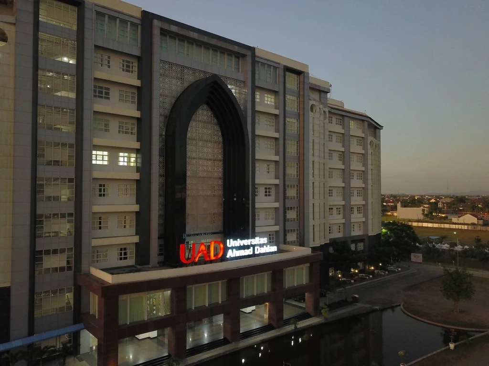
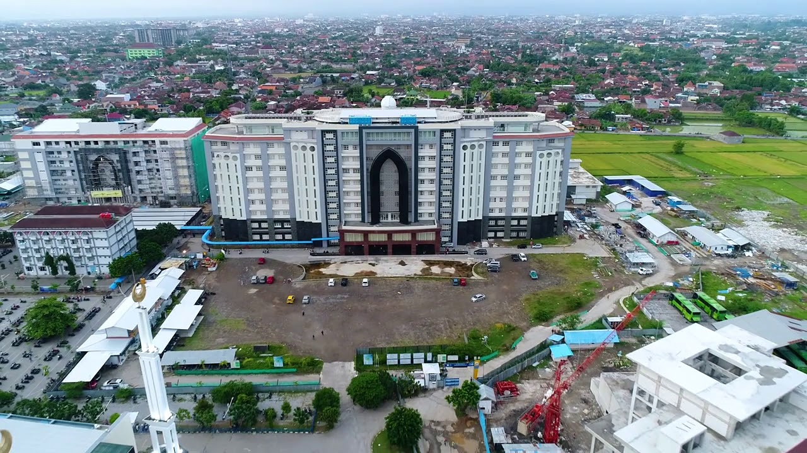
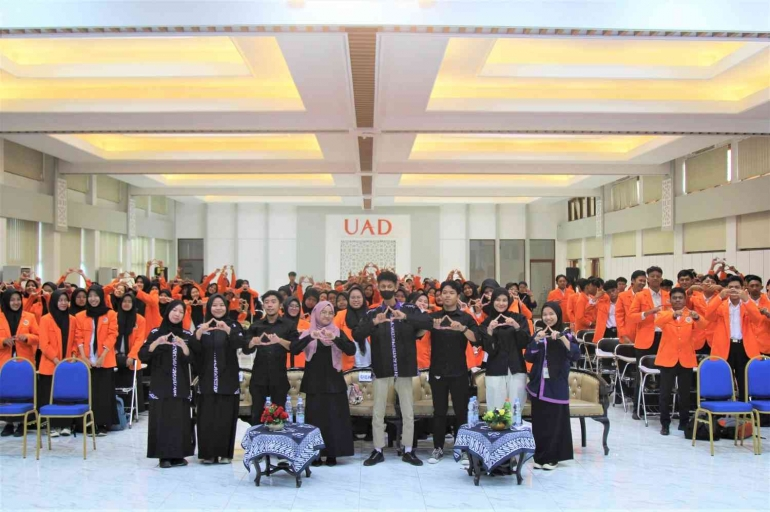
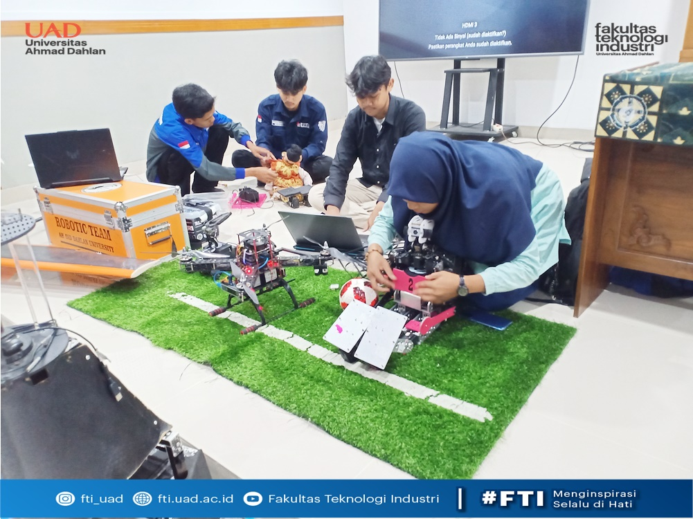

Gambar ini menunjukkan suasana kampus Universitas Ahmad Dahlan (UAD) Yogyakarta.


Aktivitas mahasiswa di lingkungan kampus UAD dalam kegiatan belajar dan diskusi.
Kunjungi website resmi UAD: www.uad.ac.id
Klik gambar untuk membuka website UAD.
Hubungi UAD: Email UAD
Pemrograman Web - Teknik Informatika - Universitas Ahmad Dahlan